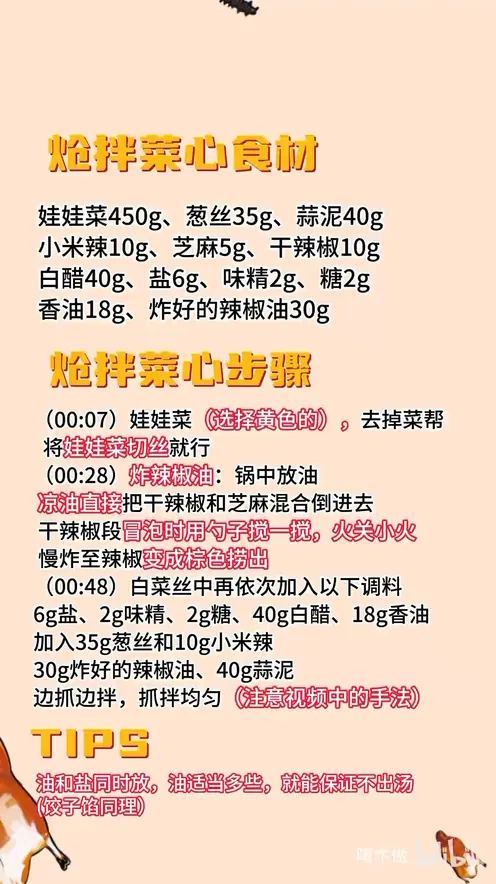

炝拌菜心
隋卞一做。450g 娃娃菜挑黄色的，去掉菜帮只留菜心切丝。干辣椒段和芝麻用凉油下锅、小火慢炸成辣椒油；菜丝里依次下 6g 盐、40g 白醋、18g 香油、30g 辣椒油、40g 蒜泥，边抓边拌，油盐同放才不出汤。
原视频：https://www.bilibili.com/video/BV1uGm2YMED7
食材
娃娃菜、葱丝、蒜泥 等 12 样
| 类别 | 用料 | 用量 |
|---|---|---|
| 主料 | 娃娃菜 | 450g |
| 主料 | 葱丝 | 35g |
| 主料 | 蒜泥 | 40g |
| 主料 | 小米辣 | 10g |
| 配料 | 芝麻 | 5g |
| 配料 | 干辣椒 | 10g |
| 调料 | 白醋 | 40g |
| 调料 | 盐 | 6g |
| 调料 | 味精 | 2g |
| 调料 | 糖 | 2g |
| 调料 | 香油 | 18g |
| 调料 | 炸好的辣椒油 | 30g |
步骤
- 切菜心：娃娃菜要选黄色的，去掉菜帮，只留菜心切成丝。
- 炸辣椒油：锅中放油，凉油时就把 10g 干辣椒和 5g 芝麻混合倒进去；干辣椒段冒泡时用勺子搅一搅，转小火慢炸，炸至辣椒变成棕色捞出。
- 调味：白菜丝里依次加入 6g 盐、2g 味精、2g 糖、40g 白醋、18g 香油。
- 加配料：再加入 35g 葱丝、10g 小米辣、30g 炸好的辣椒油和 40g 蒜泥。
- 抓拌：边抓边拌，抓拌均匀即可装盘。
小贴士
- 油和盐同时放，油适当多些，就能保证拌好的菜心不出汤（调饺子馅同理）。
- 炸辣椒油必须凉油下料、小火慢炸，辣椒变棕就捞出，炸糊了会苦。
讲解要点
难度：★☆☆☆☆（几乎零门槛，唯一要留神的是辣椒油别炸糊）
为什么这么做
- 娃娃菜要挑黄的：黄心的甜、嫩、涩味轻，绿叶多的偏老。
- 只留菜心、去掉菜帮：菜帮水分大、纤维粗，拌出来又涩又容易出汤。
- 顶刀切丝：横着纹路切，入口才脆，不带筋。
- 辣椒油凉油下料、一冒泡就转小火：让辣椒段里的水分慢慢炸出去，辣椒变棕就倒出；油温高了就算倒进盆里，余温还会继续加热，直接糊。
- 先放油后放盐、油适当多一点：油在菜表面形成一层保护膜，把水分锁在里面，拌完碗底不出汤；拌饺子馅也是同一个道理。
- 边抓边拌：抓拌能让油盐均匀裹到每一根菜丝上，比单纯翻拌更入味。
容易翻车
- 辣椒油炸糊，整盆油都是苦味。
- 先放盐后放油，菜心很快就出汤，盘底一片水。
- 挑了大白菜的绿叶或带着菜帮，涩味重、口感老。
- 拌得太早，放一会儿就塌了、出水。
原片尾卡

原片文案
AI 字幕校准稿
家常小菜炝拌菜心。越是这种家常越不好看，所以每一个步骤你一定要看清。
大白菜、这种娃娃菜都可以，一定要选那个黄的才好吃。顶刀切丝，嘶，好解压啊。
第二步就是很精髓的一步，今天正好教你们辣椒油怎么炸。直接凉油下锅就行，咱们就用很普通的辣椒段，里边放点芝麻。一冒泡呢就关小火，慢慢地让里边的水分全部都炸出去，辣椒会变成棕色，就是炸好了，把它倒出来。
为什么小火炸呢？油温太高了，您倒在盆里它还得继续加热，那就糊了。
然后放这些调料，我这都是带着秤的，比例都给你称好了：加盐、味精、白醋、葱丝、小米辣，还有关键的没放——差一点点，忘了蒜泥。直接把它拌匀就行了。
看这手法很关键，边抓边拌。拌完的菜心碗底下是没有汁的。我为啥说你们拌饺子馅也一定是先放油后放盐，油要适量多一点，这样它在这个菜的表面会形成一层保护膜。然后把咱们炸过的那个灵魂辣椒油往里一倒，就装盘了。
我吃就酸酸爽爽的，白菜的水分好足啊，但是没有白菜的涩味，臭味都没有。那个辣椒是酥脆，白菜是爽脆，还有那个白醋呛呛的，真的特别舒服。
刚才放了不少油，但是吃着一点不油乎乎的，不腻，挺好吃的。它其实就是一个很简单的小菜，但中间学的这几个技巧都非常有用，比如拌馅怎么才能不出水、辣椒油要怎么炸，大家生活中都能用得到。我们也希望用小菜让大家融会贯通，在家试一下吧。